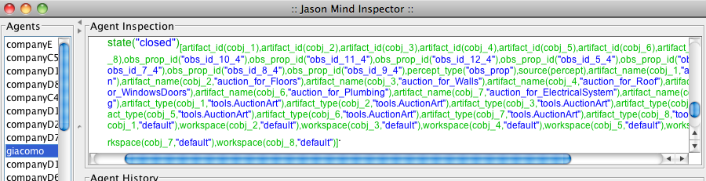

OEOP Tutorial @ EASSS 2011
Table of Contents
Part I Programming Agent & Environment
Exercise 1(a)
Edit src/java/tools/AuctionArt.java and change the init method to:
@OPERATION public void init(String taskDs, int maxValue) {
// observable properties
defineObsProperty("task", taskDs);
defineObsProperty("maxValue", maxValue);
defineObsProperty("currentBid", maxValue);
defineObsProperty("currentWinner", "no_winner");
defineObsProperty("state", "open"); /***** add this line *****/
}
Exercise 1(b)
In the AuctionArt, add the following operation
@OPERATION public void clearAuction() {
getObsProperty("state").updateValue("closed");
}
and change the bid operation as follows:
@OPERATION public void bid(double bidValue) {
if (getObsProperty("state").getValue().equals("closed")) {
return;
}
....
Since agents don't know when the auction finishes, it could be nice if they only bid if the auction is still open. For that change the context of the plans to verify the state of the auction. For instance, companyA's code becomes:
+currentBid(V)[artifact_id(Art)] // there is a new value for current bid
: not i_am_winning(Art) & // I am not the current winner
my_price(P) & P < V & // I can offer a better bid
state("open")[artifact_id(Art)] // the acution is still open /**** this line ****/
<- bid( P ). // place my bid offering a cheaper service
Exercise 2
In giacamo.asl, after showing the winners, close the auctions:
+!show_winners
<- for ( currentWinner(Ag)[artifact_id(ArtId)] ) {
?currentBid(Price)[artifact_id(ArtId)]; // check the current bid
?task(Task)[artifact_id(ArtId)]; // and the task it is for
.print("Winner of task ", Task," is ", Ag, " for ", Price);
clearAuction[artifact_id(ArtId)] /**** add this line ****/
}.
Things to try
- After running the system, click on Jason Debug to open the mind
inspector. Then select giacomo and check the new observable
property.

- To create an agent that tries to bid when the auction is closed. You can change the code of companyD for that:
...
!discover_art("auction_for_ElectricalSystem").
!discover_art("auction_for_Painting").
!bid_later. /*** from here ***/
+!bid_later
<- .wait(20000);
?task(S)[artifact_id(Art)];
.print("** bid 1 for ",S);
bid( 1 )[artifact_id(Art)].
/*** to here ***/
+task(S)[artifact_id(Art)]
...
You will note that the currentValue of the auction is not changed. But, no error is produced in the action. To fail the action, change the operation to:
@OPERATION public void bid(double bidValue) {
if (getObsProperty("state").getValue().equals("closed")) {
failed("auction closed!"); /**** this line fails the action ****/
return;
}
...
In the Jason side, you can catch that error adding the plan:
-!bid_later[error_msg(Msg)]
<- .print("Failed to bid due to: ",Msg).
Part II Programming Agent & Organisation
Exercise 1(a)
Change the lines:
<goal id="site_prepared" ttf="20 minutes" ds="prepare the site for the next tasks"/> <goal id="floors_laid" ttf="25 minutes" />
To:
<goal id="site_and_floor">
<plan operator="parallel">
<goal id="site_prepared" ttf="20 minutes" ds="prepare the site for the next tasks"/>
<goal id="floors_laid" ttf="25 minutes" />
</plan>
</goal>
During the execution, you will note that the order these goals are
achieved may interleave. To better observe that, change the code to
achieve the goals (org_goals.asl) as follows and observe the order of
achievement in the execution.
+!site_prepared // the goal (introduced by the organisational obligation)
<- .wait(3000); // **** this line: delay the achievement of the goal ****
prepareSite. // simulation of the action (in GUI artifact)
+!floors_laid <- .wait(3000); layFloors.
.....
Homework 1
In the code of Giacomo, add the following line:
makeArtifact("hsh_group","ora4mas.nopl.GroupBoard",["src/house-os.xml", house_group ],GrArtId);
adoptRole(house_owner)[artifact_id(GrArtId)];
adoptRole(roofer)[artifact_id(GrArtId)]; /**** add this line ****/
focus(GrArtId);
The operation adoptRole fails since the roles are not compatible.
Obs.: the current version of ORA4MAS doesn't control if the agent adopting the role is the one that was supposed to. In our application, if an agent adopts all companies' role, even without winning auctions, no error will be produced.
Homework 2
The following code changes the way companyD achieves the goal site_prepared
...
+!site_prepared <-
.wait(10000);
.print("I don't want to do that!");
.fail.
{ include("org_code.asl") }
{ include("org_goals.asl") }
Things to try
- See the normative state of the scheme when the agent doesn't fulfil the goal:

(you can reduce the TTF for the goal
site_preparedin the organisational specification to easily see what happens after TTF).
Homework 3
Giacomo can create new intention to handle the case of some goal being unfulfilled by plans like the following:
// signal produced by organisational artifacts
+oblUnfulfilled( obligation(Ag,Reason,Goal, Deadline) )
<- .print("We cannot trust on ",Ag,", it will be punished!");
.kill_agent(Ag).
Normative state after deadline (note the obligation's state change):

Example of the result of the execution:
...
[companyD9] I don't want to do that!
[companyD9] No failure event was generated for +!site_prepared[scheme("bhsch"),source(self)]
[giacomo] We cannot trust on companyD9, it will be punished!